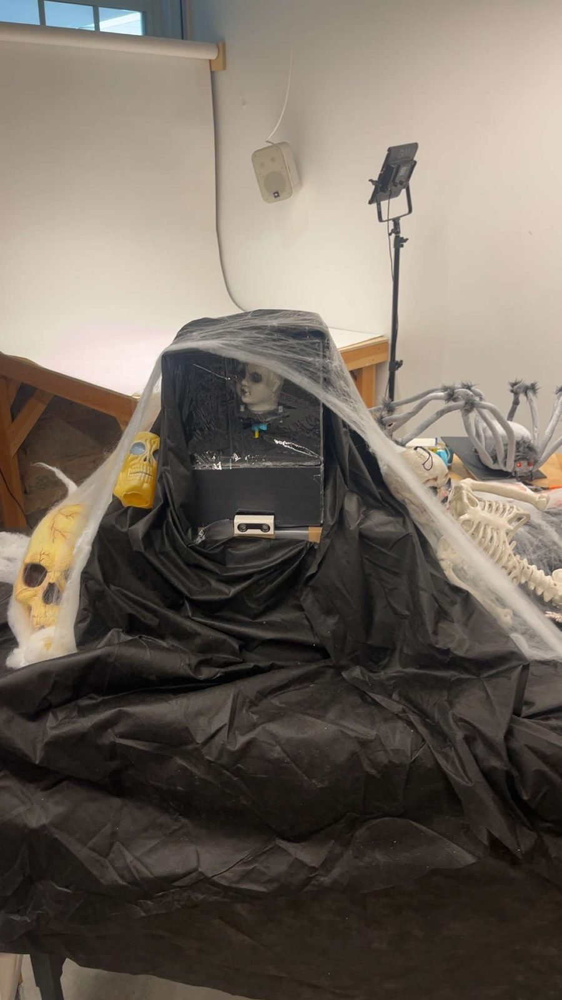
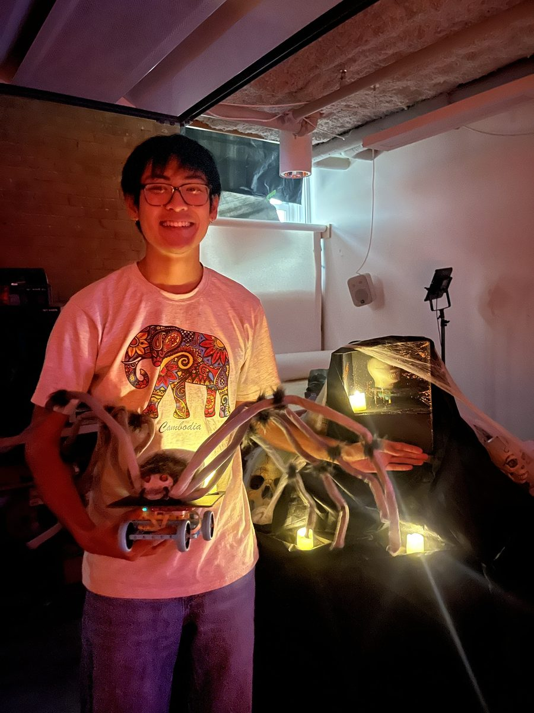

Haunted House

For Project 10, my group designed and built an exhibit for the EN1 Haunted House in the Nolop Makerspace on October 30th.
Our exhibit is a crying baby that gets louder as you walk up to it. One distance sensor controls three things at once: the volume of a baby crying recording on a laptop, a motor that turns the baby’s head, and a separate little robot car that rolls forward as the crying gets louder. It builds on the hub-to-hub messaging I tried out in Activity 6.
The baby’s head sits inside a dark box behind a clear sheet, with the distance sensor sticking out the front right below it. We covered everything in black cloth, fake cobwebs, skulls, and candles, and dressed the car up as a giant spider.
See it in action
Hardware setup
- Sender hub: distance sensor on port A and the head motor on port E. It’s plugged into my Windows laptop with a USB cable.
- Receiver hub: the car, with its drive motors on ports B and F. It runs on battery with no USB cable, so the car can move around on its own. The wheels are about 2 inches across.
- Laptop: runs
baby_player.py, which uses pyserial to talk to the sender hub and pygame to play the recording,baby.wav.



How the code works
There are really three programs: one on each hub and one on the laptop. Everything is based on a single volume number, from 40% to 100%, that the sender hub works out from the distance sensor.
Sender hub. The closer something gets, the higher the volume. Right now it’s 100% at 150 mm or closer and scales down to the minimum of 40% at 1,400 mm. Anything farther than 1,400 mm counts as “nothing there,” and so does the sensor not seeing anything at all, which also gives 40%. Raw sensor readings jump around a lot, so the sender takes the median of the last five readings and ignores changes smaller than 30 mm. Then, instead of jumping straight to the new volume, it moves 30% of the way there each time through the loop, which runs about every 50 ms. If the sensor misses readings for a moment, it waits 400 ms before treating it as “nothing there.”
Once it has the volume, the sender does three things with it:
- Prints
VOLUME:followed by the number over USB so the laptop can hear it. - Broadcasts the volume wirelessly with the spikecomm library’s Beacon so the car can hear it.
- Turns the head motor on port E to an angle that matches the volume: 40% is 180 degrees and 100% is 360 degrees, so the head turns another half circle as the baby gets louder.
The sender program is saved on the hub as a library called baby_sender, and the laptop script is what starts it (more on that below).
Laptop. When you run baby_player.py, it lists the USB ports and asks which one is the sender hub (like COM3). Then it stops whatever was running on the hub, gets to the hub’s Python prompt, and types import baby_sender into it, which starts the sender program. After that it loops baby.wav the whole time and just changes its volume to match each VOLUME: line it reads. If no volume messages show up for more than one second, it mutes the audio. When you hit Ctrl+C, it stops the sound and stops the program on the hub.
Receiver hub (the car). The car listens with spikecomm’s Scanner, and its tag has to match the sender’s Beacon tag or it won’t pick anything up. It runs as its own saved program, separate from the laptop. Instead of just driving while the baby is loud, it moves to a set spot along its track based on the volume. The full track is 1,300 degrees of wheel rotation, which we calibrated to be about two feet. 50% volume means halfway down the track, and 100% means the far end. Since the minimum volume is 40%, the car normally doesn’t back up past 40% of the way. When the volume goes up it rolls forward, and when it goes down it backs up. Each target is a fixed position, so it doesn’t keep adding distance every time a new message comes in.
The wheel encoders get zeroed when the program starts, so the car has to be sitting at its starting end of the track before you hit run. If the car stops hearing from the sender for more than one second, it stops its motors.
Code
Sender hub (baby_sender)
from hub import port
import distance_sensor
import motor
import time
from spikecomm import Beacon
beacon = Beacon("!Z", verbose=False)
NEAR_MM = 150
FAR_MM = 1400
MIN_VOLUME = 40
MAX_VOLUME = 100
SMOOTHING = 0.3
DEADBAND_MM = 30
LOST_DELAY_MS = 400
readings = []
filtered_distance = None
last_valid_time = None
current_volume = float(MIN_VOLUME)
last_angle = None
try:
while True:
now = time.ticks_ms()
try:
distance = distance_sensor.distance(port.A)
except OSError:
distance = -1
if 0 < distance <= FAR_MM:
# Clear old samples after a gap.
if (
last_valid_time is None
or time.ticks_diff(now, last_valid_time)
> LOST_DELAY_MS
):
readings = []
filtered_distance = None
last_valid_time = now
readings.append(distance)
if len(readings) > 5:
readings.pop(0)
# Reject brief sensor spikes.
if len(readings) == 5:
median_distance = sorted(readings)[2]
if (
filtered_distance is None
or abs(median_distance - filtered_distance)
>= DEADBAND_MM
):
filtered_distance = median_distance
lost = (
last_valid_time is None
or time.ticks_diff(now, last_valid_time)
> LOST_DELAY_MS
)
if lost:
readings = []
filtered_distance = None
# Stay at 40% when nothing is detected.
if filtered_distance is None:
target_volume = MIN_VOLUME
else:
closeness = max(
0.0,
min(
1.0,
(FAR_MM - filtered_distance)
/ (FAR_MM - NEAR_MM)
)
)
target_volume = MIN_VOLUME + (
MAX_VOLUME - MIN_VOLUME
) * closeness
# Smooth volume changes.
current_volume += (
target_volume - current_volume
) * SMOOTHING
volume = max(
MIN_VOLUME,
min(MAX_VOLUME, int(current_volume + 0.5))
)
# Motor E follows the same volume.
# 40% = 180 degrees; 100% = 360 degrees.
angle = 180+(volume-40) * 180 // 60
if angle != last_angle:
motor.run_to_absolute_position(
port.E,
angle,
360,
stop=motor.HOLD
)
last_angle = angle
# Wireless message to the receiver car.
beacon.broadcast(volume)
# USB message to the laptop.
print("VOLUME:", volume)
time.sleep_ms(50)
finally:
motor.stop(port.E)Receiver hub (car)
from hub import port
import motor
import time
from spikecomm import Scanner
scanner = Scanner("!Z", verbose=False)
TRAVEL_DEGREES = 1300
DRIVE_SPEED = 300
B_FORWARD = 1
F_FORWARD = -1
volume = 0
last_message = None
commanded_position = None
# The starting location becomes the zero endpoint.
motor.reset_relative_position(port.B, 0)
motor.reset_relative_position(port.F, 0)
def receive_volume(values):
global volume, last_message
if len(values) > 0:
volume = max(0, min(100, int(values[0])))
last_message = time.ticks_ms()
scanner.listen(receive_volume)
def move_car(position):
motor.run_to_relative_position(
port.B,
B_FORWARD * position,
DRIVE_SPEED,
stop=motor.HOLD
)
motor.run_to_relative_position(
port.F,
F_FORWARD * position,
DRIVE_SPEED,
stop=motor.HOLD
)
try:
while True:
disconnected = (
last_message is None
or time.ticks_diff(
time.ticks_ms(), last_message
) > 1000
)
if disconnected:
if commanded_position is not None:
motor.stop(port.B, stop=motor.HOLD)
motor.stop(port.F, stop=motor.HOLD)
commanded_position = None
else:
# 0% = starting endpoint.
# 50% = halfway.
# 100% = far endpoint.
target_position = (
TRAVEL_DEGREES * volume + 50
) // 100
if target_position != commanded_position:
move_car(target_position)
commanded_position = target_position
print("VOLUME:", volume)
time.sleep_ms(50)
finally:
motor.stop(port.B)
motor.stop(port.F)Laptop (baby_player.py)
from pathlib import Path
import re
import time
import pygame
import serial
from serial.tools import list_ports
def main():
audio_file = Path(__file__).with_name("baby.wav")
if not audio_file.exists():
raise SystemExit(
"Missing baby.wav. Put it in the same folder "
"as baby_player.py."
)
print("Available ports:")
for device in list_ports.comports():
print(f" {device.device}: {device.description}")
usb_port = input(
"\nEnter the SENDER hub's port, such as COM3: "
).strip()
pygame.mixer.init()
try:
pygame.mixer.music.load(str(audio_file))
pygame.mixer.music.set_volume(0)
with serial.Serial(
usb_port,
baudrate=115200,
timeout=0.1,
write_timeout=2
) as hub:
# Stop any old program and enter the Python prompt.
hub.write(b"\x03\x03\x02")
time.sleep(0.5)
hub.reset_input_buffer()
# Start the sender library saved through CodeRobots.
hub.write(
b"import sys; "
b"sys.path.insert(0, '/flash/lib'); "
b"sys.modules.pop('baby_sender', None); "
b"import baby_sender\r\n"
)
pygame.mixer.music.play(loops=-1)
last_message = time.monotonic()
last_volume = None
connection_lost = False
print("\nRunning with the SENDER connected by USB.")
print("Press Ctrl+C to stop.\n")
try:
while True:
line = hub.readline().decode(
errors="replace"
).strip()
match = re.fullmatch(
r"VOLUME:\s*(\d+)", line
)
if match:
volume = max(
0, min(100, int(match.group(1)))
)
pygame.mixer.music.set_volume(
volume / 100
)
last_message = time.monotonic()
connection_lost = False
if volume != last_volume:
angle = 180 + (volume - 40) * 180 // 60
print(
f"Volume: {volume}% | "
f"Motor E target: {angle} degrees"
)
last_volume = volume
elif line:
print("Sender:", line)
# Mute if sender messages stop arriving.
if time.monotonic() - last_message > 1:
pygame.mixer.music.set_volume(0)
if not connection_lost:
print("No sender messages — muted.")
connection_lost = True
last_volume = None
finally:
pygame.mixer.music.stop()
hub.write(b"\x03")
time.sleep(0.2)
finally:
pygame.mixer.quit()
if __name__ == "__main__":
try:
main()
except KeyboardInterrupt:
print("\nStopped.")
except (serial.SerialException, pygame.error) as error:
print("\nError:", error)How the design changed
We started really simple: just a distance threshold that turned a motor on and off, like in Activity 6. From there we built it up so the sound, the head, and the car all follow the same volume.
Our first car version used thresholds too. It drove one way when the volume went above 80% and the other way when it dropped below 60%. We replaced that with the position-based version described above, so now the car’s spot on the track always matches the volume instead of only reacting at two cutoffs.
We also added the filtering and smoothing on the sender after we saw how jittery the raw distance readings were.
Troubleshooting
- spikecomm on both hubs. Each hub needs its own copy of the spikecomm library loaded onto it. It’s not enough to just have it on one.
- Hub code vs. laptop code. We had to keep straight which code runs on the hubs and which is the regular Python script on the laptop. They’re different programs that run in different places.
- USB conflict. CodeRobots has to let go of the sender hub’s USB connection before
baby_player.pycan use it. If CodeRobots is still connected, the laptop script can’t talk to the hub. - Weird values on the receiver. The car sometimes got values we didn’t expect. We think other hubs nearby might have been broadcasting with the same tag. Changing our tag was suggested, but we haven’t confirmed that was the cause or that changing it fixes it.
Limitations and what’s left to check
- Getting the sound, head, and car in sync and getting the car to reliably receive the wireless messages both took troubleshooting, and the final behavior still needs to be tested all together.
- The car only knows where it is because it starts at a known spot. If it isn’t placed at its starting end before the program starts, every position after that will be off.
- The sender has to stay plugged into the laptop for the sound to work, so the baby itself can’t be wireless.
- The wireless messages aren’t private. Another hub using the same tag can mess with the car.